Amlwch Industrial Heritage Trust , Amlwch Port, Anglesey, LL68 9DB
The Copper Kingdom exhibition centre is currently closed due to Covid19 restrictions in Wales.
We look forward to welcoming you back as soon as possible.
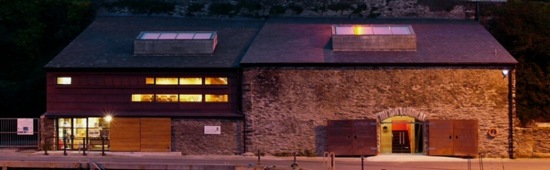
Buried deep beneath a mountain on the Isle of Anglesey, North Wales lies an extraordinary mineral wealth.
Once the largest Copper mine in the world, its abundance resulted in the growth of mining, ship building and a chemical industry in this small corner of the island.
The town of Amlwch became Anglesey's own “Copper Rush” town, just as unruly as the wild west gold rush towns.
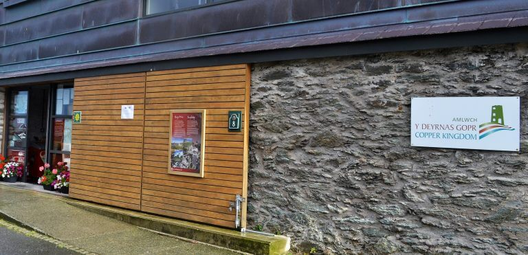
The Copper Kingdom tells the tale of the times and tribulations of the lives of our ancestors and of the transformation of a small fishing village into one of Wales’ most industrious towns of the 18th and 19th centuries.
Take the time to meander over the rugged colourful pathways of Parys Mountain, the place that became the Copper Kingdom of the 18th century. Imagine over 1500 people working away in all weathers both above and below ground, mining and filtering out the precious copper ore for a solitary penny a day.
Or alternatively, venture down to the harbour where you can experience the working life of the Copper Lady, Miner, Smelter, Mine Manager or an Assay Manager, in our award winning interactive “Copper Kingdom Centre”
Here too, you can visit the Sail Loft, a listed building with its sloping floor, a place for a small bite to eat and with further information about the ship building industry which grew up to service the needs of the copper mine.
Copper Kingdom is steeped with history and is a location that shouldn’t be missed, fun for all of the family so why not follow it’s twists and turns learn about our local history and have a great day out.
The Copper Kingdom exhibition centre is currently closed due to Covid19 Restrictions in Wales.
We look forward to welcoming you back as soon as possible.
The Copper Kingdom Centre is located on the quayside in the picturesque fishing harbour of Amlwch port, Anglesey, North Wales. This awarding winning centre tells the tale of the copper industry in the area.
Copper has been mined at Parys Mountain since the Bronze age. Following the “Great Discovery” 1768 the mine dominated the world price of copper. Over the next few years’ other industries grew up based on need to process, transport and exploit the copper found at the mountain.
The Copper Kingdom Centre is a family friendly location that can accommodate all ages.
The Centre is wheel chair accessible and has a lift that will allow access to the first floor where an abundance of information is available i.e cinema, interactive touch table, children’s play area, information boards, artefacts.
You’ll find that the workers (or Werin in Welsh) found life somewhat harder than the mine managers.
You will also have chance to visit our re-creation of an underground mine.
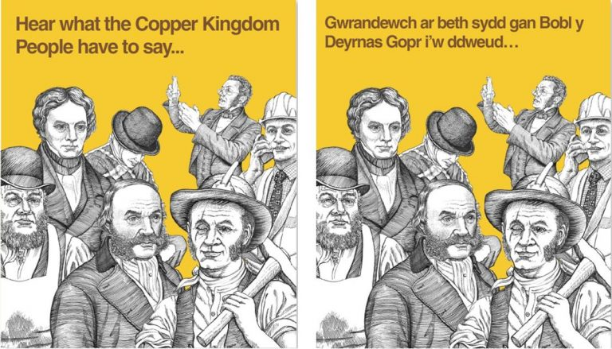
Take time to carry out some “brass” rubbings in our Children’s corner and if you feel daring enough why not dress up as a miner or copper lady and have a photo taken as a holiday reminder.
Make sure to visit the cinema and experience overhead video footage of the area the copper came from and see the mountain in a different light. The film may even make you want to make the short journey to experience the mountain itself:- Ask the staff for directions.
Finally, take some time to look around our well stocked shop, where a small trinket or souvenir can be purchased and in turn hopefully give you that simple reminder of your experience of the Copper Kingdom.
Yng ngoleuni’r achosion presennol o’r coronafeirws (COVID-19) a chyngor diweddar Llywodraeth Cymru rydym wedi penderfynu cau’r Deyrnas Gopr i ddiogelu ein gweithwyr a’n gwesteion.Edrychwn ymlaen at eich croesawu yn ôl cyn gynted ag y bo modd.
In the light of the current coronavirus (COVID-19) outbreak and recent Welsh government advice we have decided to close the Copper Kingdom to protect our employees and guests.We look forward to welcoming you back as soon as possible.
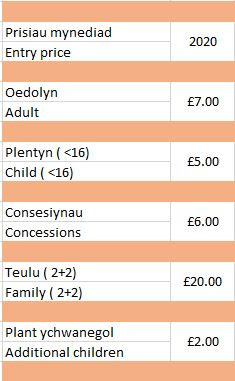
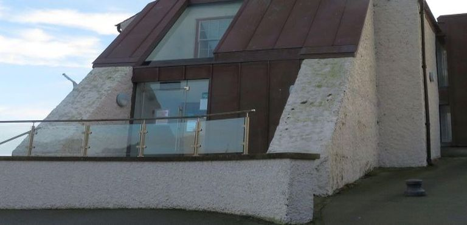
While in Amlwch harbour you should visit the Sail Loft which has an exhibition about the maritime history of the Port which developed to serve the needs of the copper industry.
Here you’ll note the sloped floor, a purpose to its design in the making of sails. Take your time digesting how the area benefitted from the tradesmen’s application and on how Amlwch Boat Yard became well known during its existence.
This unique location is somewhere where you can relax over a coffee or light lunch whether that be alfresco taking in the sights or in our quaint café /bistro.
You can also experience the life and times of our harbour men and the boat builders through visiting our Maritime museum. Here you’ll note the sloped floor and learn the history of the harbour over time.
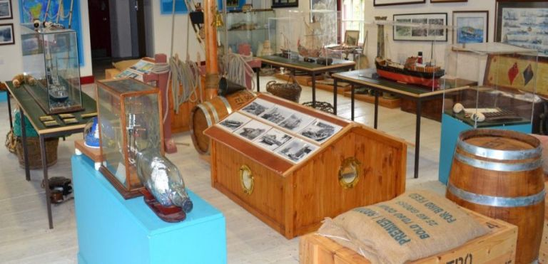
See if you can identify the legacy left by the Cornish miners and the dry dock where so many ships were launched.
Take a look at the animated projection of how the place would have looked and imagine the comings and goings of the people that worked either in the smelters or the seamen that loaded the cargo of copper ore, sulphur, and chemicals, into the boats in the harbour.
Whilst pondering and taking a step back in time have a look North out into the sea and you may be fortunate to spot land, the Isle of Man. You may even be lucky enough to see pods of dolphins passing by.
The Copper Kingdom, Sail Loft and Parys Mountain collectively provides an in-depth story of the location’s rich history of heritage, industrial turn around and lifestyles for years gone by.
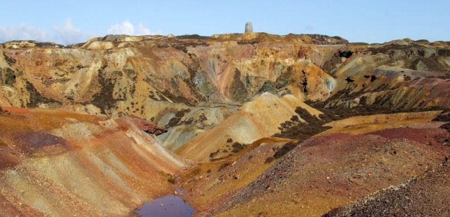
In the 18th century, Parys Mountain was the largest copper mine in the world. However, its history goes back over 4000 years to the Bronze Age.
Thomas Williams was a local solicitor in the 18th century who's manufacturing processes saw him sell the copper to the British Navy and through further processing, copper sheets [sheaths] were made and introduced to protect the naval fleets ships from timber worm and barnacle growth. This decision / invention turned out to be decisive as it also made the ships far more manoeuvrable and sea worthy in comparison to their counterparts i.e French and the Spanish. Well known characters of this period are of course Nelson and HMS Victory.
Thomas Williams’ manufacturing processes saw him sell the copper to the British Navy and through further processing, copper sheets [sheaths] were made and introduced to protect the naval fleets ships from timber worm and barnacle growth. This decision / invention turned out to be decisive as it also made the ships far more manoeuvrable and sea worthy in comparison to their counterparts i.e French and the Spanish. Well known characters of this period are of course Nelson and HMS Victory.
But what is there to see today? The self-guided walk around the surface will show you an unique, colourful, lunar landscape and some fascinating industrial ruins.
The route takes you past a large deep excavation where the copper was carved out of the ground. If you look closely you can see the remains of the Volcano at its heart. It is the mineral which spewed out of this volcano which was mined many years later.
It is known that mining took place here over 4000 years ago in the Bronze Age but most activity took place from 1768 after `The Great Discovery`.
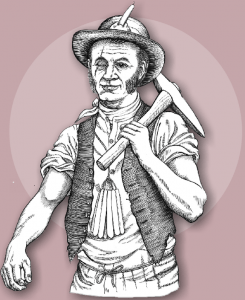
Roland Pugh a local miner stumbled on a large deposit of copper ore and it’s from here that the story really takes off. It was from this point where we had our own equivalent to the Gold Rush, the `Welsh Copper Rush`, when people came from all parts of the UK, particularly from Derbyshire and Cornwall, hoping to make their fortune at the largest copper mine in the world.
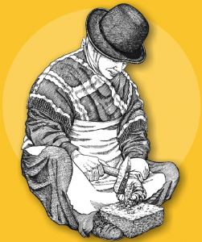
However it was not only men and boys who worked at the mountain. The rock rich in ore once raised to the surface was further processed by the woman and children of the day, who became known as the “Copper Ladis”. These were women and young girls who chipped away the waste rock surrounding the ore.
A highly valuable metal of its day it brought riches to some but hardship to many. Some of those who stayed can still trace their roots back to Cornwall.
Michael Faraday visited in 1819 and described the mines thus: –
“Here the vein had swelled out into a bunch in the way I just now mentioned and had afforded a very rich mass of ore. Here again it became very narrow and we had in one corner to lay down on our backs and wriggle in through rough slanting opening not more than 12 or 14 inches wide. The whole mountain being above us and threatening to crush us to pieces.”
These days many of the underground entrances have been sealed but you can still safely follow the self-guided trails around the surface.
Parys Mountain is located just 2 miles from the Copper Kingdom centre and is open all year. There is a free car park and a self-guided marked walking trail.
To get the most from your walk we would recommend that you take time to visit the Copper Kingdom Centre in Amlwch port so that you can put true meaning to the experience that you’ve had.
It is less than 10 minutes drive or a 45 minutes walk.
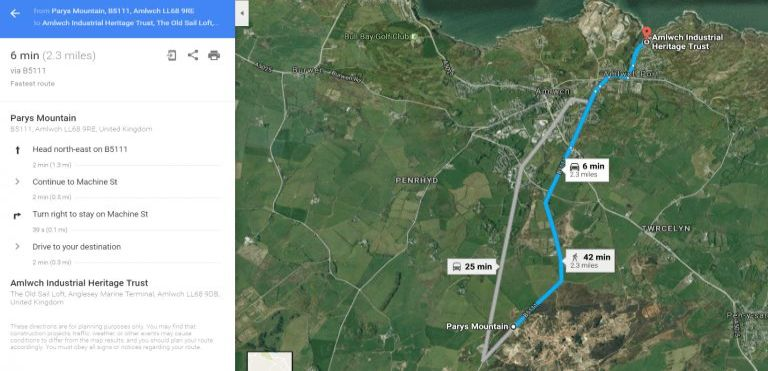
Old mine workings can be dangerous and so it is important that you stay on the path and keep children and dogs under control. There is no shelter on the mountain so be prepared for bad weather and wear walking boots. It will take around 90 minutes to complete the full trail.
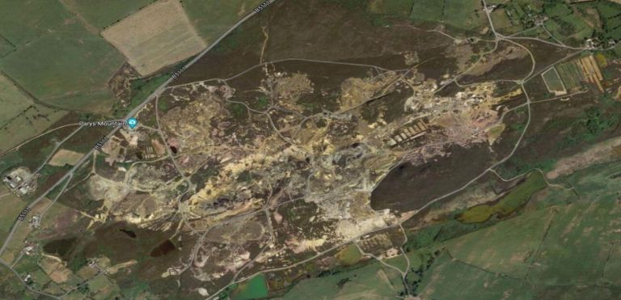
Download Parys Mountain Trail Leaflet
Parys Underground Group control access to around 5 km of old tunnels and workings under the mountain. Access to the old workings is dangerous and should not be attempted. For this reason, it is important that visitors to the surface stay on the designated paths. Their web site can be seen at : www.parysmountain.co.uk
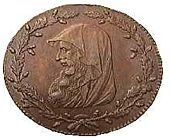
The Copper Kingdom is operated by Amlwch Industrial Heritage Trust a Charity limited by guarantee.The Trust’s aim is to conserve the industrial and natural landscapes of Mynydd Parys, Dyffryn Adda and Porth Amlwch, whilst recognising the legal rights and reasonable expectations of the landowners and occupiers.
Patrons of Amlwch Industrial Heritage Trust
Huw Edwards
Ieuan Wyn Jones
Baroness Kinnock of Holyhead, FRSA
Siân Lloyd
Management of Amlwch Industrial Heritage Trust
The governing body comprises a voluntary board of eight trustee directors who bring experience and academic knowledge of the area, its history and geology, as well as local knowledge and experience in running both commercial and social businesses.
The centres and associated activities are managed on a day-to-day basis by a full-time manager, who is supported by a team of seasonal staff between March and October, being the period when the interpretation centres are mainly open to the public.
The café within the Sail Loft is leased to a local business person, who focuses on the delivery of locally-sourced ingredients where possible, and enhances the visitor experience by the provision of good quality refreshments and excellent customer service.
Trustee Directors
Michael R Williams (Chair) (BA (Hons) Banking and Finance)
Mike currently delivers a project supporting the creation and development of growth social enterprises and co-operatives in North Wales for The Wales Co-operative Centre. He was previously a career banker with HSBC, being an Associate of the Chartered Institute of Bankers and having an honours degree in Banking and Finance. Mike chaired a social enterprise in Llanddaniel Fab, Anglesey, for 18 years and is a former chair of the PTA in Llanfairpwll as well as a former governor of Ysgol Syr Thomas Jones in Amlwch. He was a community councillor for 10 years in Llanddaniel Fab, serving two years as chair. Mike was born and bred in Amlwch, his interest in the industrial history of Parys Mountain developing from the time he spent exploring the mountain in his youth.
David A. Jenkins, BA. (Geology, Cantab.); PhD (Soil Science, Wales)
Senior Lecturer in Soil Science (mineralogy, geochemistry, pedology) at the University of Wales, Bangor; recently retired and a Senior Fellow at the University. Continuing research in soil mineralogy, geochemistry and micromorphology, and in archaeological science with a particular interest in prehistoric mining. Chairman of the Early Mines Research Group (1990-2) and past Chairman (1992-97) and Trustee (1990-) of the Gwynedd Archaeological Trust. Chairman of the Parys Underground Group
David Wagstaff
Past director of an Engineering Company and proprietor of an engineering business concerned with the manufacture of special purpose machinery for the textile and chemical industries. Part time Patrol Ranger in the Peak District National Park following a course in training by the Peak Park Ranger Service. Holder of the British Mountain Leadership Certificate. Organiser of the Trust’s volunteer warden service. Currently a blue badge Tourist Guide in North Wales and professional tourist guide. Member of the Parys Underground Group
Anne Harris
Anne Harris works in tourism as a tourist guide for Wales. She has been interested in the local history and folklore for many years, with her interest in the Parys Mines developing while exploring the area as a child. She began her working life as a health-care professional, being a qualified nurse and midwife. During a career break for child-rearing she studied for an Open University degree in Psychology and qualified as a teacher at the University of Wales, Bangor before returning to paid employment at Ysgol David Hughes, Menai Bridge, where she has taught I.T. and Health and Social Care. Anne is also employed by the Welsh Joint Exam Board, where she is Principal Moderator for Health and Social Care. Anne has a great interest in local history and folklore, fostered by exploring the area as a child, and is a qualified Blue Badge tourist for Wales. She is a past chair of the Parys Underground Group, the exploration group involved with the Parys Mountain Mines.
Neil Summers BSc, MA, CChem, MBCS, MCITP
Neil Summers worked as a Chartered Chemist and Chemical Engineer for 25 years before changing to a career in IT. Recently retired as Head of IT for a local organisation, he now runs his own computer consultancy business. He has held various roles with AIHT and Parys Underground Group for the last 20 years.
Peter Williams
Peter Williams was born in Bangor, and has lived in Porth Amlwch all his life. He is a keen artist, who works with oil, watercolours, and pen and ink, and is also highly skilled in carpentry, rope rigging, weaving with willow and model-making/repairing. He worked in a voluntary capacity for the Copper Kingdom and the Amlwch Industrial Heritage Trust (including carrying out general maintenance work) before becoming a Trustee. He has also given local history lectures to various groups. He is Chair of the Amlwch Port Community Centre. He is Secretary of the Amlwch Port Boat Club.
Lynn McCann
Lynn retired in 2017 having spent over 40 years working to support individuals and communities achieve their goals. She worked for central and local government, and ran her own business for over 10 years. She has been a Princes Trust Advisor and Start Up Britain advisor, and Associate Lecturer/Network of Hope Co-ordinator at Liverpool Hope University. She has delivered enterprise programmes in over 200 schools in England and Wales and in a variety of companies including Starbucks, Boots, Asda,HBOS and Everton in the Community. Her final role was co-ordinating the Special Needs School Direct programme on Merseyside and Chief Operating Officer of Envision CIC at St Vincent’s School for Sensory Impairment in Liverpool. Now living on Anglesey she is Chair of Chwaraeon Cymunedol Amlwch Community Sports CIC and a Trustee of Amlwch Industrial Heritage Trust.
Richard Griffiths
Richard worked for 36yrs with Rio Tinto at the Holyhead Smelting Site in a Supervisory Role.For about 4yrs Richard and his wife ran the Sail Loft Museum and Café for Menter Mon and was one of the 1st employees at the newly established Copper Museum in 2012.
Currently Richard is a County Councillor for the Twrcelyn Ward and continues to support local Industrial Heritage areas such as Amlwch Port and Parys Mountain and is keen to link both sitesto enhance Tourism.
Richard has established a Parys Mountain Facebook page which currently has members from all over the World.
Additional online resources
Privacy Statement
Disclaimer
Fair Use Policy
Cefndir
Mae stori’r diwydiant copr yn Amlwch yn rhyfeddol. Ar ôl darganfod mwyn copr ar y mynydd yn 1768 daeth tref bysgota fechan Amlwch yn lle pwysicaf ei ddylanwad ar farchnad gopr y byd am gyfnod. O ganlyniad fe ddatblygiodd diwydiant llongau llwyddiannus yn yr harbwr, a thrawsnewidiwyd Amlwch i fod yn un o drefi mwyaf ffyniannus Cymru. Erbyn 1800 cofnodwyd 8 siop gigydd, 13 siop deiliewr, 6 haearnwerthwr a 60 o dai tafarn yn y dref!
Y stori hon yw craidd menter ‘Y Deyrnas Gopr’ – atyniad sydd yn tyfu yn fwyfwy poblogaidd yn flynyddol.
Y Deyrnas Gopr: Atyniad Pwysig iawn i Ynys Môn
Mae Y Deyrnas Gopr yn cael ei reoli gan Ymddiriedolaeth Etifeddiaeth Ddiwydiannol Amlwch, a gafodd ei sefydlu yn 1997. Yn ystod 19 o flynyddoedd mae’r Ymddiriedolaeth wedi goruchwilio nifer o ddatblygiadau pwysig sydd wedi:
Mae’r Ganolfan a’r Llofft Hwyliau bellach yn denu 8,000 o ymwelwyr y flwyddyn.
The Copper Kingdom Centre, Amlwch Port, Anglesey, LL68 9DB